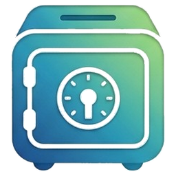

Política de Privacidade — Meus Gastos
Última atualização: 6 de novembro de 2026
Esta política explica como o aplicativo Meus Gastos (“app”), para Android e computador, trata as suas informações. Em resumo: o app não tem servidor e não coleta seus dados. Tudo fica no seu aparelho e, se você escolher sincronizar, no seu próprio Google Drive.
1. Dados que você registra
Os gastos, receitas, categorias e fotos de comprovantes que você cadastra ficam gravados no armazenamento privado do app no seu aparelho. Esses dados não são enviados para nenhum servidor do desenvolvedor.
2. Login com Google e acesso ao Google Drive
A sincronização é opcional. Se você conectar sua conta Google, o app pede somente a permissão
https://www.googleapis.com/auth/drive.file, que permite ver, criar, editar e excluir
apenas os arquivos do Google Drive criados pelo próprio app.
- O app cria uma pasta “Meus Gastos” no seu Drive e grava nela o arquivo de dados (
gastos.json) e as fotos dos comprovantes. - O app não lê, altera nem lista nenhum outro arquivo do seu Drive.
- O app não acessa seu nome, e-mail, contatos ou qualquer outra informação da sua conta Google.
- O token de acesso fornecido pelo Google fica guardado apenas no seu aparelho e é usado somente para sincronizar seus dados.
3. Compartilhamento
O app não vende, aluga nem compartilha seus dados com ninguém. Não há anúncios, rastreamento ou análise de uso. O desenvolvedor não tem acesso aos dados de nenhum usuário.
4. Uso limitado dos dados do Google
O uso e a transferência, para qualquer outro aplicativo, das informações recebidas das APIs do Google seguem a Política de Dados do Usuário dos Serviços de API do Google, incluindo os requisitos de Uso Limitado.
5. Como remover seus dados e o acesso
- Desconectar: no app, toque no ícone de nuvem e em “Desconectar”.
- Revogar o acesso: em myaccount.google.com/permissions, remova o “Meus Gastos”.
- Apagar os dados da nuvem: exclua a pasta “Meus Gastos” do seu Google Drive.
- Apagar os dados do aparelho: desinstale o app (ou, no computador, apague a pasta
%APPDATA%\MeusGastos).
6. Crianças
O app não é direcionado a menores de 13 anos e não coleta dados de ninguém.
7. Alterações
Se esta política mudar, a nova versão será publicada nesta página, com a data de atualização.
8. Contato
Dúvidas: pedrozuqui2010@gmail.com